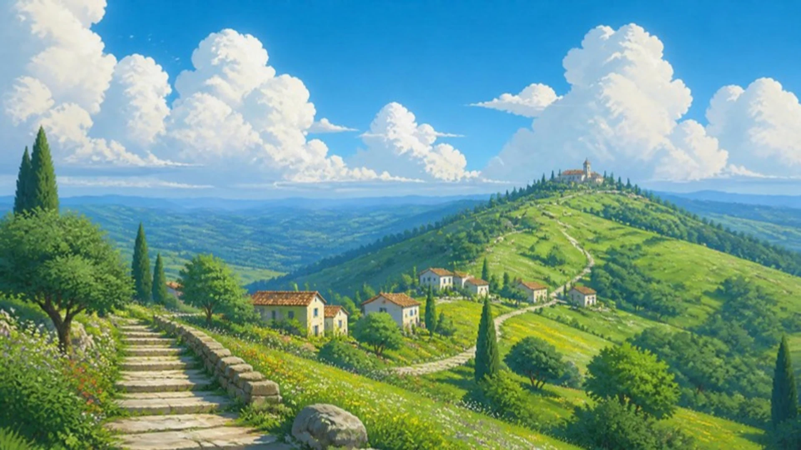
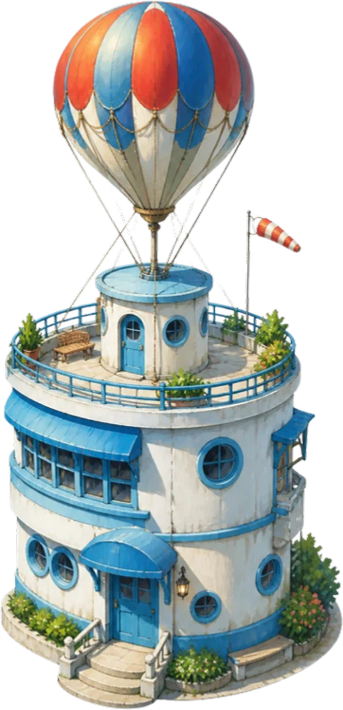
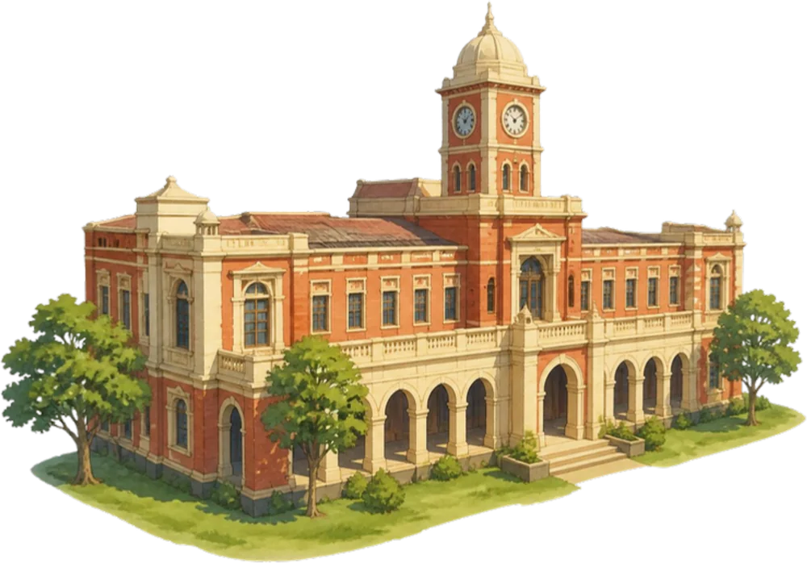
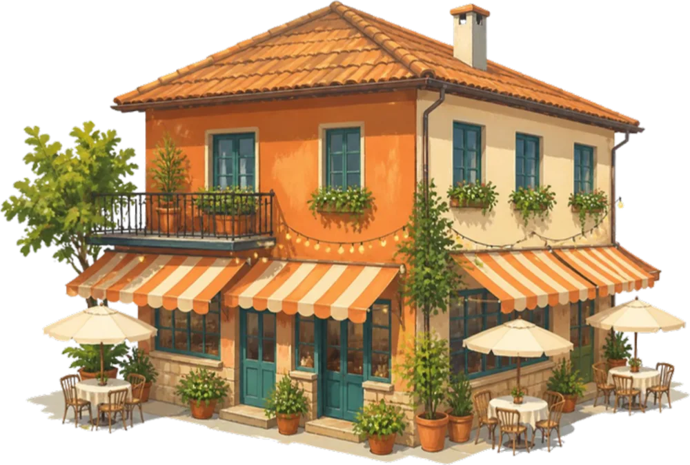
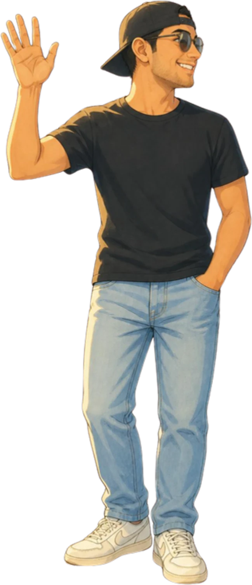
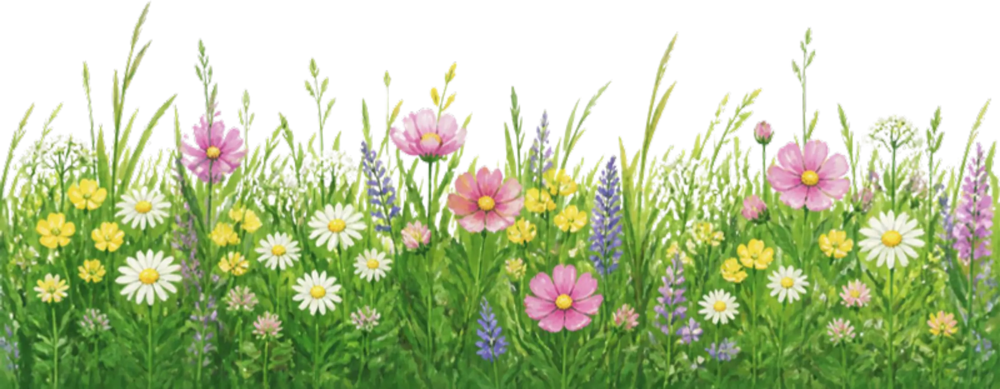

<title>James Chugh</title>
<meta name="description" content="James Chugh, product and UX designer. Explore the valley.">
<link rel="preconnect" href="https://fonts.googleapis.com">
<link rel="preconnect" href="https://fonts.gstatic.com" crossorigin>
<link rel="stylesheet" href="https://fonts.googleapis.com/css2?family=Bricolage+Grotesque:opsz,wght@12..96,400;12..96,500;12..96,600;12..96,800&family=Instrument+Serif:ital@0;1&display=swap">
<style>
/* Layout: one painted valley you can explore (hover a building and the camera walks in),
   then the camera pushes down the stairway, clouds roll over, and the site opens onto
   a cream page where the story highlights itself and the path draws as you scroll. */
:root {
  --sky: #2B93D9;        /* sampled from the painting */
  --sky-soft: #D6EEFC;
  --paper: #FFF9EE;      /* warm daylight paper */
  --ink: #16283A;        /* deep lake blue, never black */
  --ink-2: #4E6276;
  --line: rgba(22, 40, 58, .14);
  --sun: #FFD84D;        /* highlighter */
  --coral: #FF6A4A;
  --leaf: #3E8B3E;
  --card: #FFFDF8;
  --shadow: 0 24px 60px -18px rgba(18, 42, 66, .35), 0 2px 6px rgba(18, 42, 66, .08);
  --sans: "Bricolage Grotesque", ui-sans-serif, system-ui, -apple-system, "Segoe UI", sans-serif;
  --serif: "Instrument Serif", "Iowan Old Style", "Palatino Linotype", Georgia, serif;
  --ease: cubic-bezier(.22, 1, .36, 1);
  color-scheme: light;
}
html { background: var(--paper); overflow-x: clip; }
html.lenis, html.lenis body { height: auto; }
.lenis.lenis-smooth { scroll-behavior: auto !important; }
body { margin: 0; background: var(--paper); color: var(--ink); font-family: var(--sans); font-size: 17px; line-height: 1.55;
  -webkit-font-smoothing: antialiased; -moz-osx-font-smoothing: grayscale; overflow-x: clip; }
button { font: inherit; color: inherit; background: none; border: 0; padding: 0; cursor: pointer; }
a { color: inherit; }
:focus-visible { outline: 2px solid var(--ink); outline-offset: 3px; border-radius: 8px; }
[hidden] { display: none !important; }
img { display: block; max-width: none; user-select: none; -webkit-user-drag: none; }

/* ---------- top bar ---------- */
.bar { position: fixed; z-index: 40; top: 0; left: 0; right: 0; display: flex; justify-content: space-between; align-items: center;
  padding: calc(env(safe-area-inset-top, 0px) + 18px) clamp(16px, 3.4vw, 40px) 0; pointer-events: none; }
.bar > * { pointer-events: auto; }
.mark { display: inline-flex; align-items: center; gap: 10px; text-decoration: none; font-weight: 800; letter-spacing: -.02em; font-size: 17px;
  padding: 8px 14px 8px 8px; border-radius: 999px; background: rgba(255, 253, 248, .78); backdrop-filter: blur(12px); -webkit-backdrop-filter: blur(12px);
  box-shadow: 0 1px 0 rgba(255,255,255,.6) inset, 0 6px 20px -10px rgba(18,42,66,.35); }
.mark i { width: 26px; height: 26px; border-radius: 50%; background: var(--sun); display: grid; place-items: center; font-style: normal; font-size: 13px; }
.bar-link { font-weight: 600; font-size: 14px; text-decoration: none; padding: 10px 16px; border-radius: 999px; background: var(--ink); color: var(--paper);
  transition: transform .5s var(--ease); }
.bar-link:hover { transform: translateY(-2px); }

/* ---------- hero valley ---------- */
.hero { position: relative; height: 250vh; }
.stage { position: sticky; top: 0; height: 100vh; height: 100svh; overflow: hidden; overflow: clip; background: var(--sky); touch-action: pan-y; }
.world { position: absolute; left: 0; top: 0; transform-origin: 0 0; will-change: transform; --inv: 1; }
.world > * { position: absolute; }
.land { inset: 0; width: 100%; height: 100%; }
.drift, .birds, .meadow { pointer-events: none; }

.drift { inset: 0; }
.drift img { position: absolute; opacity: .95; animation: drift var(--d, 90s) ease-in-out infinite alternate; }
@keyframes drift { from { transform: translateX(-3%); } to { transform: translateX(6%); } }

.birds { inset: 0; overflow: hidden; }
.flock { position: absolute; left: 0; animation: fly var(--t, 46s) linear infinite; animation-delay: var(--dl, 0s); }
.flock > span { position: absolute; animation: bob 3.2s ease-in-out infinite alternate; }
.bird { display: block; width: 1.25vw; min-width: 12px; height: auto; overflow: visible; }
.bird path { fill: none; stroke: #2A3B4C; stroke-width: 1.6; stroke-linecap: round; stroke-linejoin: round; transform-origin: 12px 6px; animation: flap .42s ease-in-out infinite alternate; }
@keyframes fly { from { left: -6%; } to { left: 106%; } }
@keyframes bob { from { transform: translateY(0); } to { transform: translateY(12px); } }
@keyframes flap { from { transform: scaleY(1); } to { transform: scaleY(-.35); } }

.spot { display: block; isolation: isolate; transition: filter .6s var(--ease); }
.s-college::before, .s-diner::before, .s-travel::before { content: ""; position: absolute; z-index: -1; left: 6%; right: 6%; bottom: 0; height: 18%;
  background: radial-gradient(closest-side, rgba(24, 52, 26, .42), rgba(24, 52, 26, .18) 55%, transparent); transform: translateY(28%); }
.s-travel::before { left: -10%; right: -10%; height: 9%; transform: translateY(20%); }
.spot img { width: 100%; height: auto; transition: transform .7s var(--ease), filter .7s var(--ease); transform-origin: 50% 100%; }
.spot:hover img, .spot.on img { transform: translateY(-2.5%) scale(1.02); filter: drop-shadow(0 14px 22px rgba(18, 42, 66, .28)) brightness(1.04); }
.world.focusing .spot:not(.on) { filter: saturate(.75) brightness(.94); }
.s-college { left: 61%; top: 53.2%; width: 18.5%; }
.s-diner { left: 43.5%; top: 62%; width: 15%; }
.s-travel { left: 84.4%; top: 39.6%; width: 7.2%; }
.s-me { left: 14.6%; top: 60.5%; width: 9.2%; }
.s-me img { animation: sway 5s ease-in-out infinite; transform-origin: 50% 100%; }
.s-me:hover img, .s-me.on img { animation-play-state: paused; }
@keyframes sway { 0%, 100% { rotate: 0deg; } 50% { rotate: -1.2deg; } }
.ring { width: 6%; aspect-ratio: 1; transform: translate(-50%, -50%); border-radius: 50%; }
.ring::before, .ring::after { content: ""; position: absolute; inset: 0; border-radius: 50%; border: 2px solid rgba(255, 253, 248, .95);
  box-shadow: 0 0 0 1px rgba(22, 40, 58, .12); animation: ping 2.8s var(--ease) infinite; }
.ring::after { animation-delay: 1.4s; }
.ring:hover::before, .ring.on::before { background: rgba(255, 216, 77, .25); }
@keyframes ping { from { transform: scale(.35); opacity: 1; } to { transform: scale(1); opacity: 0; } }
.s-oyo { left: 72.2%; top: 38.4%; width: 5%; }
.s-home { left: 35.6%; top: 69%; width: 6.5%; }

.meadow { position: absolute; width: 50%; height: auto; top: 77.5%; transform-origin: 50% 100%; }
.m-a { left: 22%; }
.m-b { left: 64%; transform: scaleX(-1); }
.fg { position: absolute; inset: 0; pointer-events: none; }
.fg > * { will-change: transform; }

/* pins: live in world space but counter-scale so they stay readable */
.pins { inset: 0; pointer-events: none; transition: opacity .5s var(--ease); }
.world.moving .pins { opacity: 0; }
.pin { position: absolute; pointer-events: auto; transform: translate(-50%, -100%) scale(var(--inv)); transform-origin: 50% 100%;
  display: flex; flex-direction: column; align-items: center; gap: 6px; }
.pin b { display: inline-flex; align-items: center; gap: 8px; white-space: nowrap; font-weight: 700; font-size: 13.5px; letter-spacing: -.01em;
  padding: 7px 12px 7px 8px; border-radius: 999px; background: var(--card); box-shadow: var(--shadow); transition: transform .5s var(--ease); }
.pin b::before { content: ""; width: 10px; height: 10px; border-radius: 50%; background: var(--c, var(--coral)); box-shadow: 0 0 0 3px color-mix(in srgb, var(--c, var(--coral)) 22%, transparent); }
.pin small { font: italic 15px/1 var(--serif); color: var(--ink); background: rgba(255, 253, 248, .7); padding: 3px 8px; border-radius: 999px; }
.pin::after { content: ""; width: 1.5px; height: 18px; background: linear-gradient(var(--card), transparent); order: 3; }
.pin:hover b, .pin.on b { transform: translateY(-3px) scale(1.04); }
.world.focusing .pin:not(.on) { opacity: .25; }
.pin { transition: opacity .5s var(--ease); }

.vignette { position: absolute; inset: 0; pointer-events: none; opacity: 0; transition: opacity 1s var(--ease);
  background: radial-gradient(120% 90% at var(--vx, 50%) 50%, transparent 38%, rgba(16, 38, 58, .38)); }
.stage.focusing .vignette { opacity: 1; }

/* intro copy set in the sky */
.intro { position: absolute; z-index: 5; transition: opacity .6s var(--ease); left: clamp(16px, 5vw, 72px); top: calc(env(safe-area-inset-top, 0px) + clamp(84px, 14vh, 150px));
  width: min(62rem, calc(100vw - 32px)); pointer-events: none; will-change: transform, opacity; }
.hi { font: italic 400 clamp(20px, 1.8vw, 26px)/1 var(--serif); margin: 0 0 14px; display: inline-flex; align-items: center; gap: 10px; }
.hi svg { width: 34px; height: 16px; stroke: var(--ink); fill: none; stroke-width: 1.4; stroke-linecap: round; }
.intro h1 { margin: 0; font-weight: 800; font-size: clamp(2.5rem, 5vw, 5.2rem); line-height: .96; letter-spacing: -.045em; text-wrap: balance; }
.ln { display: block; overflow: hidden; padding: .04em .1em .08em 0; margin-bottom: -.04em; }
.ln > span { display: inline-block; animation: rise 1.3s var(--ease) both; animation-delay: 1.35s; }
.ln + .ln > span { animation-delay: 1.5s; }
@keyframes rise { from { transform: translateY(110%); } to { transform: none; } }
.it { font-family: var(--serif); font-style: italic; font-weight: 400; letter-spacing: -.02em; }
.brush { position: relative; display: inline-block; padding: 0 .12em; z-index: 0; }
.brush::before { content: ""; position: absolute; z-index: -1; inset: .1em -.08em .02em -.1em; background: var(--brush) center / 100% 100% no-repeat;
  clip-path: inset(0 100% 0 0); animation: paint 1.1s var(--ease) forwards; animation-delay: var(--bd, 2.3s); }
@keyframes paint { to { clip-path: inset(0 0 0 0); } }
.brush-sun { --brush: url("data:image/svg+xml,%3Csvg xmlns='http://www.w3.org/2000/svg' viewBox='0 0 200 60' preserveAspectRatio='none'%3E%3Cpath d='M7 33C18 12 58 8 108 9c42 1 78-2 87 14 5 11-4 24-35 27-40 4-100 5-137 1C6 49 1 43 7 33z' fill='%23FFD84D'/%3E%3C/svg%3E"); }
.note { margin: 18px 0 0; display: flex; align-items: flex-start; gap: 10px; font: italic 400 clamp(17px, 1.45vw, 21px)/1.25 var(--serif); color: var(--ink);
  opacity: 0; animation: fade 1s var(--ease) 2.9s forwards; }
.note svg { width: 42px; height: 34px; flex: none; stroke: var(--ink); fill: none; stroke-width: 1.4; stroke-linecap: round; margin-top: 4px; }
@keyframes fade { to { opacity: 1; } }

/* place chips */
.places { position: absolute; z-index: 6; left: 50%; bottom: calc(env(safe-area-inset-bottom, 0px) + 20px); transform: translateX(-50%);
  display: flex; gap: 6px; padding: 6px; border-radius: 999px; background: rgba(255, 253, 248, .74); backdrop-filter: blur(14px); -webkit-backdrop-filter: blur(14px);
  box-shadow: var(--shadow); max-width: calc(100vw - 32px); overflow-x: auto; scrollbar-width: none; will-change: opacity; }
.places::-webkit-scrollbar { display: none; }
.places button { white-space: nowrap; font-size: 13.5px; font-weight: 600; padding: 9px 14px; border-radius: 999px; display: inline-flex; align-items: center; gap: 7px; transition: background .4s var(--ease); }
.places button::before { content: ""; width: 8px; height: 8px; border-radius: 50%; background: var(--c); }
.places button:hover, .places button.on { background: var(--card); box-shadow: 0 2px 8px -2px rgba(18,42,66,.25); }
.cue { position: absolute; z-index: 6; right: clamp(16px, 3.4vw, 40px); bottom: calc(env(safe-area-inset-bottom, 0px) + 30px); display: flex; align-items: center; gap: 10px;
  font: italic 18px/1 var(--serif); color: var(--paper); text-shadow: 0 1px 12px rgba(16, 38, 58, .45); pointer-events: none; }
.cue i { width: 22px; height: 34px; border: 1.5px solid currentColor; border-radius: 12px; position: relative; }
.cue i::after { content: ""; position: absolute; left: 50%; top: 7px; width: 3px; height: 7px; margin-left: -1.5px; border-radius: 2px; background: currentColor; animation: wheel 1.8s var(--ease) infinite; }
@keyframes wheel { 0% { transform: translateY(0); opacity: 1; } 70% { transform: translateY(9px); opacity: 0; } 100% { opacity: 0; } }

/* chapter card */
.card { position: absolute; z-index: 8; top: 50%; right: clamp(16px, 4vw, 64px); width: min(26rem, calc(100vw - 32px)); padding: 26px 26px 22px;
  border-radius: 22px; background: var(--card); box-shadow: var(--shadow); color: var(--ink);
  opacity: 0; visibility: hidden; transform: translate(24px, -50%) rotate(1deg); transition: opacity .55s var(--ease), transform .8s var(--ease), visibility 0s .8s; }
.card.left { right: auto; left: clamp(16px, 4vw, 64px); transform: translate(-24px, -50%) rotate(-1deg); }
.card.on { opacity: 1; visibility: visible; transform: translate(0, -50%) rotate(0); transition: opacity .6s var(--ease) .15s, transform .9s var(--ease) .1s, visibility 0s; }
.card .k { display: inline-flex; align-items: center; gap: 8px; font-size: 12px; font-weight: 700; letter-spacing: .12em; text-transform: uppercase; color: var(--ink-2); }
.card .k::before { content: ""; width: 10px; height: 10px; border-radius: 50%; background: var(--c); }
.card h2 { margin: 10px 0 4px; font: 400 clamp(38px, 3.4vw, 50px)/1 var(--serif); letter-spacing: -.02em; }
.card h2 em { font-style: italic; }
.card .meta { margin: 0 0 14px; font-size: 14px; font-weight: 600; color: var(--ink-2); }
.card p.body { margin: 0; font-size: 16.5px; line-height: 1.55; }
.card .said { margin: 14px 0 0; font: italic 20px/1.25 var(--serif); padding-left: 14px; border-left: 2px solid var(--c); }
.card .tags { display: flex; flex-wrap: wrap; gap: 6px; margin: 16px 0 0; padding: 0; list-style: none; }
.card .tags li { font-size: 12.5px; font-weight: 600; padding: 5px 10px; border-radius: 999px; background: color-mix(in srgb, var(--c) 12%, var(--card)); }
.card .row { display: flex; gap: 8px; margin-top: 20px; flex-wrap: wrap; }
.btn { display: inline-flex; align-items: center; gap: 8px; font-size: 14px; font-weight: 700; padding: 11px 16px; border-radius: 999px; text-decoration: none; transition: transform .5s var(--ease), background .4s; }
.btn-ink { background: var(--ink); color: var(--paper); }
.btn-ink:hover { transform: translateY(-2px); }
.btn-ghost { background: rgba(22, 40, 58, .06); }
.btn-ghost:hover { background: rgba(22, 40, 58, .11); }

/* opening veil: the Shailesh moment, pure CSS so it never traps the page */
.veil { position: absolute; z-index: 20; inset: 0; pointer-events: none; animation: hide 0s 3.6s forwards; }
.veil::before { content: ""; position: absolute; inset: 0; background: linear-gradient(#CFE9FB, #F4FAFF 60%, #FFFFFF); animation: fadeout 1.6s .9s var(--ease) forwards; }
.veil img { position: absolute; width: 95vw; min-width: 700px; }
.v1 { left: -30vw; top: -12vh; animation: vl 2.9s .35s cubic-bezier(.7, 0, .15, 1) forwards; }
.v2 { right: -34vw; top: 8vh; transform: scaleX(-1); animation: vr 2.9s .45s cubic-bezier(.7, 0, .15, 1) forwards; }
.v3 { left: -18vw; bottom: -26vh; animation: vd 2.9s .3s cubic-bezier(.7, 0, .15, 1) forwards; }
.v4 { right: -22vw; bottom: -30vh; transform: scaleX(-1); animation: vd2 2.9s .4s cubic-bezier(.7, 0, .15, 1) forwards; }
.v5 { left: 12vw; top: 26vh; width: 80vw; animation: vc 2.6s .25s cubic-bezier(.7, 0, .15, 1) forwards; }
@keyframes vl { to { transform: translate(-70vw, -30vh) scale(1.5); } }
@keyframes vr { to { transform: translate(70vw, -24vh) scale(-1.5, 1.5); } }
@keyframes vd { to { transform: translate(-50vw, 60vh) scale(1.6); } }
@keyframes vd2 { to { transform: translate(50vw, 60vh) scale(-1.6, 1.6); } }
@keyframes vc { to { transform: translate(0, -80vh) scale(1.9); opacity: 0; } }
@keyframes fadeout { to { opacity: 0; } }
@keyframes hide { to { visibility: hidden; } }

/* ---------- section 2: clouds roll over, the site opens ---------- */
.story { position: relative; z-index: 10; margin-top: -100vh; }
.skirt { position: relative; height: 62vh; pointer-events: none; }
.skirt::after { content: ""; position: absolute; left: 0; right: 0; bottom: 0; height: 52%; background: linear-gradient(transparent, var(--paper) 78%); }
.skirt img { position: absolute; bottom: 0; will-change: transform; }
.k1 { width: 72vw; min-width: 520px; left: -12vw; bottom: 4vh !important; }
.k2 { width: 70vw; min-width: 520px; right: -14vw; transform: scaleX(-1); }
.k3 { width: 90vw; min-width: 640px; left: 8vw; bottom: -8vh !important; }
.k4 { width: 60vw; min-width: 460px; left: 44vw; bottom: 10vh !important; }

.tell-track { position: relative; height: 230vh; background: var(--paper); }
.tell-pin { position: sticky; top: 0; height: 100vh; height: 100svh; display: grid; align-content: center; padding-inline: clamp(16px, 6vw, 96px); }
.tell-wrap { display: grid; grid-template-columns: minmax(0, 15rem) minmax(0, 1fr); gap: clamp(20px, 4vw, 64px); align-items: start; max-width: 76rem; margin: 0 auto; width: 100%; }
.label { margin: .5em 0 0; font: italic 400 26px/1.1 var(--serif); display: flex; align-items: center; gap: 10px; }
.label svg { width: 22px; height: 22px; fill: var(--coral); animation: spin 14s linear infinite; }
@keyframes spin { to { rotate: 360deg; } }
.tell { margin: 0; font: 400 clamp(2rem, 4.1vw, 3.9rem)/1.12 var(--serif); letter-spacing: -.015em; text-wrap: pretty; }
.tell .w { opacity: .16; transition: opacity .35s linear; }
.tell mark { background: none; color: inherit; position: relative; z-index: 0; font-style: italic; white-space: nowrap; }
.tell mark::before { content: ""; position: absolute; z-index: -1; inset: .16em -.12em .04em -.12em; background: var(--brush) center / 100% 100% no-repeat;
  clip-path: inset(0 100% 0 0); transition: clip-path 1s var(--ease); }
.tell mark.on::before { clip-path: inset(0 0 0 0); }
.b-sky { --brush: url("data:image/svg+xml,%3Csvg xmlns='http://www.w3.org/2000/svg' viewBox='0 0 200 60' preserveAspectRatio='none'%3E%3Cpath d='M5 30C14 11 60 9 104 10c46 1 82-1 90 15 6 12-6 23-38 25-40 3-98 4-134 0C5 48 0 41 5 30z' fill='%23A9DBFA'/%3E%3C/svg%3E"); }
.b-sun { --brush: url("data:image/svg+xml,%3Csvg xmlns='http://www.w3.org/2000/svg' viewBox='0 0 200 60' preserveAspectRatio='none'%3E%3Cpath d='M7 33C18 12 58 8 108 9c42 1 78-2 87 14 5 11-4 24-35 27-40 4-100 5-137 1C6 49 1 43 7 33z' fill='%23FFD84D'/%3E%3C/svg%3E"); }
.b-coral { --brush: url("data:image/svg+xml,%3Csvg xmlns='http://www.w3.org/2000/svg' viewBox='0 0 200 60' preserveAspectRatio='none'%3E%3Cpath d='M6 31C16 13 56 7 104 8c46 1 80 0 89 15 5 12-5 25-36 27-42 3-100 5-135 1C5 49 1 42 6 31z' fill='%23FFB09C'/%3E%3C/svg%3E"); }
.tell-foot { margin: 36px 0 0; font-size: 15px; font-weight: 600; color: var(--ink-2); display: flex; align-items: center; gap: 10px; }
.tell-foot::before { content: ""; width: 36px; height: 1.5px; background: currentColor; opacity: .5; }

/* the path */
.path { position: relative; background: var(--paper); padding-block: 6vh 20vh; }
.path-head { text-align: center; padding-inline: 16px; position: relative; z-index: 2; }
.path-head p.eyebrow { margin: 0; font-size: 12.5px; font-weight: 700; letter-spacing: .16em; text-transform: uppercase; color: var(--ink-2); }
.path-head h2 { margin: 10px 0 8px; font: 800 clamp(2.4rem, 5.2vw, 4.6rem)/.98 var(--sans); letter-spacing: -.045em; text-wrap: balance; }
.path-head p { margin: 0; font: italic 21px/1.3 var(--serif); color: var(--ink-2); }
.trail { position: relative; margin-top: 4vh; }
.trail svg { position: absolute; inset: 0; width: 100%; height: 100%; overflow: visible; }
.trail .ghost { stroke: var(--ink); opacity: .14; }
.trail .dots { stroke: var(--ink); }
.trail path { fill: none; stroke-width: 5; stroke-linecap: round; stroke-dasharray: .1 15; }
.trail .reveal { stroke: #fff; stroke-dasharray: none; stroke-width: 14; }
.walker { position: absolute; left: 0; top: 0; width: 50px; z-index: 3; pointer-events: none; will-change: transform; }
.walker img { width: 100%; height: auto; filter: drop-shadow(0 6px 6px rgba(18, 42, 66, .25)); }
.walker.walking img { animation: step .36s ease-in-out infinite alternate; }
@keyframes step { from { transform: translateY(0) rotate(-2deg); } to { transform: translateY(-3px) rotate(2deg); } }
.node { position: absolute; z-index: 2; width: 22px; height: 22px; margin: -11px 0 0 -11px; border-radius: 50%; background: var(--paper); border: 3px solid var(--c);
  transition: background .5s var(--ease), transform .6s var(--ease); }
.node.reached { background: var(--c); transform: scale(1.15); box-shadow: 0 0 0 7px color-mix(in srgb, var(--c) 18%, transparent); }
.stop { position: absolute; z-index: 2; width: min(27rem, 30vw); opacity: .38; transform: translateY(26px); transition: opacity .8s var(--ease), transform 1s var(--ease); }
.stop.reached { opacity: 1; transform: none; }
.stop .art { height: 150px; margin-bottom: 8px; display: flex; align-items: flex-end; }
.stop .art img { height: 100%; width: auto; filter: drop-shadow(0 12px 16px rgba(18, 42, 66, .18)); }
.stop .art .window { width: 140px; height: 140px; border-radius: 50%; background: url("assets/land.webp") var(--pos, 72% 38%) / 1400% auto no-repeat; box-shadow: 0 0 0 6px var(--card), var(--shadow); }
.stop .art .disc { width: 120px; height: 120px; border-radius: 50%; background: var(--c); color: var(--card); display: grid; place-items: center; font: italic 64px/1 var(--serif); box-shadow: var(--shadow); }
.stop .n { font-size: 12.5px; font-weight: 700; letter-spacing: .14em; text-transform: uppercase; color: var(--ink-2); display: flex; gap: 10px; align-items: center; }
.stop .n b { color: var(--c); }
.stop h3 { margin: 6px 0 6px; font: 400 clamp(40px, 4vw, 58px)/1 var(--serif); letter-spacing: -.02em; }
.stop p { margin: 0; font-size: 17px; color: var(--ink); max-width: 30ch; }
.sky-bits { position: absolute; inset: 0; overflow: hidden; pointer-events: none; }
.sky-bits img { position: absolute; opacity: .55; will-change: transform; }
.end { position: relative; text-align: center; font: italic 24px/1.3 var(--serif); color: var(--ink-2); margin-top: 6vh; padding-inline: 16px; }

@media (max-width: 760px) {
  body { font-size: 16px; }
  .intro { top: calc(env(safe-area-inset-top, 0px) + 86px); }
  .intro h1 { font-size: clamp(2.3rem, 10.5vw, 3.2rem); }
  .note { font-size: 17px; }
  .cue { display: none; }
  .card, .card.left { top: auto; bottom: calc(env(safe-area-inset-bottom, 0px) + 84px); left: 16px; right: 16px; width: auto; padding: 20px 20px 18px;
    transform: translateY(24px); }
  .card.on { transform: none; }
  .card h2 { font-size: 38px; }
  .card p.body { font-size: 15.5px; }
  .card .said { display: none; }
  .tell-wrap { grid-template-columns: 1fr; gap: 18px; }
  .label { font-size: 22px; }
  .stop { width: auto; }
  .stop .art { height: 110px; }
  .stop .art .window { width: 104px; height: 104px; }
  .stop .art .disc { width: 96px; height: 96px; font-size: 52px; }
  .stop h3 { font-size: 40px; }
  .stop p { font-size: 16px; }
}

@media (prefers-reduced-motion: reduce) {
  *, *::before, *::after { animation-duration: .001s !important; animation-delay: 0s !important; animation-iteration-count: 1 !important; transition-duration: .001s !important; }
  .flock { display: none; }
}
</style>

<header class="bar">
  <a class="mark" href="#top" aria-label="James Chugh, back to the valley"><i>J</i>James Chugh</a>
  <a class="bar-link" href="#path" data-jump="path">The path so far</a>
</header>

<main>
  <section class="hero" id="top">
    <div class="stage" id="stage">
      <div class="world" id="world">
        

        <div class="drift" id="drift">
          
          
          
        </div>

        <div class="birds" id="birds" aria-hidden="true">
          <div class="flock" style="top:17%; --t:52s; --dl:-8s">
            <span style="left:0; top:0"><svg class="bird" viewBox="0 0 24 10"><path d="M1 6Q6 1 12 6Q18 1 23 6"/></svg></span>
            <span style="left:1.8vw; top:1.2vw; animation-delay:-.8s"><svg class="bird" viewBox="0 0 24 10" style="width:1vw"><path d="M1 6Q6 1 12 6Q18 1 23 6" style="animation-delay:-.2s"/></svg></span>
            <span style="left:3.2vw; top:-.6vw; animation-delay:-1.6s"><svg class="bird" viewBox="0 0 24 10" style="width:.9vw"><path d="M1 6Q6 1 12 6Q18 1 23 6" style="animation-delay:-.1s"/></svg></span>
          </div>
          <div class="flock" style="top:29%; --t:70s; --dl:-40s">
            <span style="left:0; top:0"><svg class="bird" viewBox="0 0 24 10" style="width:.8vw"><path d="M1 6Q6 1 12 6Q18 1 23 6"/></svg></span>
            <span style="left:1.4vw; top:.8vw; animation-delay:-1s"><svg class="bird" viewBox="0 0 24 10" style="width:.7vw"><path d="M1 6Q6 1 12 6Q18 1 23 6" style="animation-delay:-.3s"/></svg></span>
          </div>
          <div class="flock" style="top:9%; --t:84s; --dl:-20s">
            <span style="left:0; top:0"><svg class="bird" viewBox="0 0 24 10" style="width:.7vw"><path d="M1 6Q6 1 12 6Q18 1 23 6" style="animation-delay:-.15s"/></svg></span>
          </div>
        </div>

        <button class="spot ring s-oyo" data-id="oyo" aria-label="OYO, the hotel on the hill"></button>
        <button class="spot ring s-home" data-id="home" aria-label="Off the clock"></button>
        <button class="spot s-travel" data-id="mmt" aria-label="MakeMyTrip, the balloon tower"></button>
        <button class="spot s-college" data-id="nsut" aria-label="NSUT, my college"></button>
        <button class="spot s-diner" data-id="eazydiner" aria-label="EazyDiner, the bistro"></button>
        <button class="spot s-me" data-id="me" aria-label="About me"></button>

        <div class="fg" id="fg">
          
          
        </div>

        <div class="pins" id="pins">
          <button class="pin" data-id="nsut" style="left:70.25%; top:53%; --c:#B9543A" tabindex="-1"><b>NSUT</b><small>2021</small></button>
          <button class="pin" data-id="eazydiner" style="left:51%; top:62.5%; --c:#E4572E" tabindex="-1"><b>EazyDiner</b></button>
          <button class="pin" data-id="mmt" style="left:88%; top:39.5%; --c:#2A7BD1" tabindex="-1"><b>MakeMyTrip</b></button>
          <button class="pin" data-id="oyo" style="left:72.2%; top:35%; --c:#E3342F" tabindex="-1"><b>OYO</b></button>
          <button class="pin" data-id="home" style="left:35.6%; top:66%; --c:#3E8B3E" tabindex="-1"><b>Off the clock</b></button>
          <button class="pin" data-id="me" style="left:19.2%; top:60.5%; --c:#F2B705" tabindex="-1"><b>That's me</b></button>
        </div>
      </div>

      <div class="vignette" id="vignette"></div>

      <div class="intro" id="intro">
        <p class="hi">Hi, I'm James <svg viewBox="0 0 34 16"><path d="M2 12c8-10 18-10 30-6M26 2l6 4-5 5"/></svg></p>
        <h1>
          <span class="ln"><span>Engineer by degree.</span></span>
          <span class="ln"><span>Designer by <span class="brush brush-sun it">curiosity.</span></span></span>
        </h1>
        <p class="note"><svg viewBox="0 0 42 34"><path d="M3 3c2 14 12 24 34 26M30 22l7 7-9 3"/></svg><span id="noteText">This valley is my story. Hover a building to step inside.</span></p>
      </div>

      <nav class="places" id="places" aria-label="Places in the valley">
        <button data-id="nsut" style="--c:#B9543A">NSUT</button>
        <button data-id="eazydiner" style="--c:#E4572E">EazyDiner</button>
        <button data-id="mmt" style="--c:#2A7BD1">MakeMyTrip</button>
        <button data-id="oyo" style="--c:#E3342F">OYO</button>
        <button data-id="me" style="--c:#F2B705">About me</button>
        <button data-id="home" style="--c:#3E8B3E">Off the clock</button>
      </nav>
      <div class="cue" id="cue"><i></i>Scroll to walk in</div>

      <aside class="card" id="card" aria-live="polite">
        <span class="k" id="c-k"></span>
        <h2 id="c-t"></h2>
        <p class="meta" id="c-m"></p>
        <p class="body" id="c-b"></p>
        <p class="said" id="c-s"></p>
        <ul class="tags" id="c-tags"></ul>
        <div class="row">
          <button class="btn btn-ink" id="c-go">Walk the path <span aria-hidden="true">→</span></button>
          <button class="btn btn-ghost" id="c-back">Back to the valley</button>
        </div>
      </aside>

      <div class="veil" aria-hidden="true">
        
        
        
        
        
      </div>
    </div>
  </section>

  <section class="story" id="story">
    <div class="skirt" id="skirt" aria-hidden="true">
      
      
      
      
    </div>
    <div class="tell-track" id="tellTrack">
      <div class="tell-pin">
        <div class="tell-wrap">
          <p class="label"><svg viewBox="0 0 24 24" aria-hidden="true"><path d="M12 1l2.2 7.1L21 5l-3.6 6.5L24 14l-7.1 1.3L19 22l-7-3.9L5 22l2.1-6.7L0 14l6.6-2.5L3 5l6.8 3.1z"/></svg>How I got here</p>
          <div>
            <p class="tell" id="tell">I started by learning <mark class="b-sky">how things work.</mark> Eventually, I became more interested in <mark class="b-sun">why people use them.</mark> That's where I discovered <mark class="b-coral">UX.</mark> Since then I've designed for diners, travellers and hotel guests, and built a product of my own.</p>
            <p class="tell-foot">Keep scrolling. The path starts here.</p>
          </div>
        </div>
      </div>
    </div>
  </section>

  <section class="path" id="path">
    <div class="path-head">
      <p class="eyebrow">Chapters</p>
      <h2>The path so far</h2>
      <p>Scroll to walk it. Every stop is a chapter.</p>
    </div>
    <div class="sky-bits" aria-hidden="true">
      
      
      
      
    </div>
    <div class="trail" id="trail">
      <svg id="trailSvg" aria-hidden="true">
        <defs><mask id="trailMask" maskUnits="userSpaceOnUse"><path class="reveal" id="revealPath"/></mask></defs>
        <path class="ghost" id="ghostPath"/>
        <path class="dots" id="dotsPath" mask="url(#trailMask)"/>
      </svg>
      <div class="walker" id="walker"></div>
    </div>
    <p class="end">More of the path is on its way.</p>
  </section>
</main>

<script src="https://cdn.jsdelivr.net/npm/lenis@1.1.13/dist/lenis.min.js"></script>
<script>
(() => {
  const $ = (s, r = document) => r.querySelector(s);
  const $$ = (s, r = document) => [...r.querySelectorAll(s)];
  const clamp = (v, a = 0, b = 1) => Math.min(b, Math.max(a, v));
  const smooth = t => t * t * (3 - 2 * t);
  const reduce = matchMedia('(prefers-reduced-motion: reduce)').matches;

  /* Chapters. Facts only; lines marked in the reply need James's own wording. */
  const CH = {
    nsut: { c: '#B9543A', fx: .7025, fy: .64, k: 'Chapter 01 · College', t: 'NSUT, <em>New Delhi</em>', m: 'B.Tech, Mechanical Engineering · Class of 2021',
      b: 'Netaji Subhas University of Technology. Four years of machines, drawings and tolerances. I started by learning how things work.',
      s: 'Somewhere along the way I got more curious about why people use them.', tags: ['Mechanical Engineering', 'Class of 2021', 'New Delhi'] },
    eazydiner: { c: '#E4572E', fx: .51, fy: .71, k: 'Chapter 02 · Work', t: 'EazyDiner', m: 'Restaurant discovery and table booking',
      b: 'An app for finding a great place to eat and booking a table in a few taps. I designed for diners deciding where to go tonight.',
      s: '', tags: ['Product design', 'Consumer app', 'Food & dining'] },
    mmt: { c: '#2A7BD1', fx: .88, fy: .53, k: 'Chapter 03 · Work', t: 'MakeMyTrip', m: 'Flights, hotels and holidays',
      b: 'One of India’s biggest travel platforms. I designed for people planning a trip, from the first search to the booking.',
      s: '', tags: ['Product design', 'Travel', 'Scale'] },
    oyo: { c: '#E3342F', fx: .722, fy: .40, k: 'Chapter 04 · Work', t: 'OYO', m: 'Hotels and homes',
      b: 'The hotel on the hill. I designed for guests looking for a place to stay, and for the flows that get them checked in.',
      s: '', tags: ['Product design', 'Hospitality'] },
    me: { c: '#F2B705', fx: .19, fy: .76, k: 'About me', t: 'Hi, I’m <em>James</em>', m: 'Product and UX designer',
      b: 'A mechanical engineer who fell for design. I’ve worked on products for diners, travellers and hotel guests, and I’m building LastLook, a product of my own.',
      s: 'I like knowing how things work, and why people use them.', tags: ['Product design', 'UX', 'Engineering roots'] },
    home: { c: '#3E8B3E', fx: .356, fy: .69, k: 'Off the clock', t: 'Studio <em>& content</em>', m: 'Life outside work',
      b: 'When I’m not designing for work, I make things about design: videos, posts and experiments with AI tools.',
      s: '', tags: ['Content', 'AI tools', 'Side projects'] }
  };
  const STOPS = [
    { id: 'nsut', c: '#B9543A', n: '2021', kind: 'College · 2021', name: 'NSUT', line: 'B.Tech in Mechanical Engineering at Netaji Subhas University of Technology, New Delhi.', art: '' },
    { id: 'eazydiner', c: '#E4572E', n: 'Work', kind: 'Work', name: 'EazyDiner', line: 'Designing restaurant discovery and table booking.', art: '' },
    { id: 'mmt', c: '#2A7BD1', n: 'Work', kind: 'Work', name: 'MakeMyTrip', line: 'Designing for people planning flights, hotels and holidays.', art: '' },
    { id: 'oyo', c: '#E3342F', n: 'Work', kind: 'Work', name: 'OYO', line: 'Designing for guests looking for a place to stay.', art: '<span class="window" style="--pos:72.2% 37%"></span>' },
    { id: 'prism', c: '#7B5CD6', n: 'Work', kind: 'Work', name: 'PRISM', line: 'Chapter details coming next.', art: '<span class="disc">P</span>' },
    { id: 'lastlook', c: '#1F9D74', n: 'My product', kind: 'My product', name: 'LastLook', line: 'My own product.', art: '<span class="disc">L</span>' }
  ];

  if (matchMedia('(hover: none)').matches) $('#noteText').textContent = 'This valley is my story. Tap a building to step inside, or swipe to look around.';

  /* ---------- smooth scroll ---------- */
  let lenis = null;
  if (!reduce && window.Lenis) {
    lenis = new Lenis({ lerp: 0.085, smoothWheel: true, wheelMultiplier: 0.9 });
  }
  const getY = () => (lenis ? lenis.scroll : window.scrollY);
  const goTo = y => lenis ? lenis.scrollTo(y, { duration: 1.8, easing: t => 1 - Math.pow(1 - t, 4) }) : window.scrollTo({ top: y, behavior: reduce ? 'auto' : 'smooth' });

  /* ---------- elements ---------- */
  const stage = $('#stage'), world = $('#world'), hero = $('#top'), intro = $('#intro'), card = $('#card');
  const places = $('#places'), cue = $('#cue'), vignette = $('#vignette');
  const meadowA = $('.m-a'), meadowB = $('.m-b'), meS = $('.s-me'), drift = $('#drift'), birds = $('#birds');
  const spots = $$('.spot, .pin'), chips = $$('#places button');

  let vw = 0, vh = 0, W = 0, H = 0, baseX = 0, baseY = 0, heroTop = 0, heroRange = 1, mobile = false, ax = .5, panned = false;
  const cur = { x: 0, y: 0, s: 1.22 }, tgt = { x: 0, y: 0, s: 1 };
  let rate = 1.4, rateGoal = 9;
  const pointer = { x: 0, y: 0, sx: 0, sy: 0 };
  let focusId = null, focusAt = 0, p = 0;

  function layout() {
    vw = stage.clientWidth; vh = stage.clientHeight; mobile = vw < 760;
    W = Math.max(vw, vh * 16 / 9); H = W * 9 / 16;
    world.style.width = W + 'px'; world.style.height = H + 'px';
    heroTop = hero.getBoundingClientRect().top + window.scrollY; heroRange = Math.max(1, hero.offsetHeight - vh);
    if (!panned) ax = mobile ? .5 : .5;
    base();
    if (!cur.init) { cur.x = baseX - (cur.s - 1) * W * .33; cur.y = baseY - (cur.s - 1) * H * .6; cur.init = true; }
    buildTrail(); measureTell();
  }
  function base() { baseX = (vw - W) * ax; baseY = (vh - H) * .42; }
  function clampCam(o) {
    o.x = Math.min(0, Math.max(vw - o.s * W, o.x));
    o.y = Math.min(0, Math.max(vh - o.s * H, o.y));
    return o;
  }
  function scrollCam(pr) {
    const e = smooth(pr), s = 1 + e * .7, fx = .3, fy = .8;
    const sx = baseX + fx * W, sy = baseY + fy * H;
    return clampCam({ x: sx - s * fx * W, y: sy - s * fy * H, s });
  }
  function focusCam(id) {
    const c = CH[id], s = mobile ? 1.7 : 1.9;
    const sx = mobile ? vw * .5 : (c.fx < .55 ? vw * .32 : vw * .66);
    const sy = mobile ? vh * .22 : vh * .52;
    return clampCam({ x: sx - s * c.fx * W, y: sy - s * c.fy * H, s });
  }

  /* ---------- focus ---------- */
  function fill(id) {
    const c = CH[id];
    card.style.setProperty('--c', c.c);
    $('#c-k').textContent = c.k; $('#c-t').innerHTML = c.t; $('#c-m').textContent = c.m; $('#c-b').textContent = c.b;
    const said = $('#c-s'); said.textContent = c.s; said.hidden = !c.s;
    $('#c-tags').innerHTML = c.tags.map(t => `<li>${t}</li>`).join('');
    const stop = STOPS.find(s => s.id === id);
    const go = $('#c-go'); go.dataset.to = stop ? id : 'path';
    go.firstChild.textContent = stop ? 'See this stop on the path ' : 'Walk the path ';
  }
  function focus(id) {
    if (!CH[id]) return;
    if (p > .04) { goTo(heroTop); setTimeout(() => focus(id), 900); return; }
    if (focusId === id) return;
    focusId = id; focusAt = performance.now(); rate = 3.2; rateGoal = 3.2; moved = 0;
    fill(id);
    card.classList.toggle('left', !mobile && CH[id].fx >= .55);
    card.classList.add('on');
    stage.classList.add('focusing'); world.classList.add('focusing');
    vignette.style.setProperty('--vx', (CH[id].fx < .55 ? 32 : 66) + '%');
    spots.forEach(s => s.classList.toggle('on', s.dataset.id === id));
    chips.forEach(s => s.classList.toggle('on', s.dataset.id === id));
  }
  function unfocus() {
    if (!focusId) return;
    focusId = null; rate = 3; rateGoal = 9;
    card.classList.remove('on');
    stage.classList.remove('focusing'); world.classList.remove('focusing');
    spots.forEach(s => s.classList.remove('on')); chips.forEach(s => s.classList.remove('on'));
  }

  let hoverT = 0, leaveT = 0, moved = 0, lastMX = null, lastMY = null, dragFrom = null, dragged = false;
  spots.forEach(el => {
    el.addEventListener('pointerenter', e => {
      if (e.pointerType !== 'mouse' || p > .04) return;
      clearTimeout(leaveT); leaveT = 0; clearTimeout(hoverT);
      hoverT = setTimeout(() => focus(el.dataset.id), focusId ? 140 : 300);
    });
    el.addEventListener('pointerleave', e => { if (e.pointerType === 'mouse') clearTimeout(hoverT); });
    el.addEventListener('click', e => { if (dragged) { e.preventDefault(); return; } focus(el.dataset.id); });
  });
  chips.forEach(el => el.addEventListener('click', () => focusId === el.dataset.id ? unfocus() : focus(el.dataset.id)));
  $('#c-back').addEventListener('click', unfocus);
  $('#c-go').addEventListener('click', e => { const to = e.currentTarget.dataset.to; unfocus(); jumpTo(to); });
  $$('[data-jump]').forEach(a => a.addEventListener('click', e => { e.preventDefault(); unfocus(); jumpTo(a.dataset.jump); }));
  $('.mark').addEventListener('click', e => { e.preventDefault(); unfocus(); goTo(0); });
  addEventListener('keydown', e => { if (e.key === 'Escape') unfocus(); });

  stage.addEventListener('pointermove', e => {
    if (e.pointerType === 'mouse') {
      pointer.x = (e.clientX / vw) * 2 - 1; pointer.y = (e.clientY / vh) * 2 - 1;
      if (focusId) {
        const over = e.target.closest('.spot, .pin, .card, .places');
        if (over) { moved = 0; clearTimeout(leaveT); leaveT = 0; }
        else if (lastMX !== null && performance.now() - focusAt > 700) {
          moved += Math.hypot(e.clientX - lastMX, e.clientY - lastMY);
          if (moved > 90 && !leaveT) leaveT = setTimeout(() => { leaveT = 0; unfocus(); }, 220);
        }
      }
      lastMX = e.clientX; lastMY = e.clientY;
    } else if (dragFrom && !focusId && mobile) {
      const dx = e.clientX - dragFrom.x;
      if (Math.abs(dx) > 8) dragged = true;
      ax = clamp(dragFrom.ax - dx / Math.max(1, W - vw)); panned = true; base();
    }
  });
  stage.addEventListener('pointerdown', e => { dragged = false; if (e.pointerType !== 'mouse') dragFrom = { x: e.clientX, ax }; });
  addEventListener('pointerup', () => { dragFrom = null; setTimeout(() => dragged = false, 0); });
  stage.addEventListener('click', e => { if (focusId && !e.target.closest('.spot, .pin, .card, .places')) unfocus(); });

  /* ---------- section 2: story ---------- */
  const tell = $('#tell'), tellTrack = $('#tellTrack'), skirt = $('#skirt'), skirtImgs = $$('#skirt img');
  let words = [], marks = [], tellTop = 0, tellRange = 1, storyTop = 0;
  (function split() {
    const walk = (node, parentMark) => {
      [...node.childNodes].forEach(n => {
        if (n.nodeType === 3) {
          const frag = document.createDocumentFragment();
          n.textContent.split(/(\s+)/).forEach(tok => {
            if (!tok) return;
            if (/^\s+$/.test(tok)) { frag.appendChild(document.createTextNode(tok)); return; }
            const s = document.createElement('span'); s.className = 'w'; s.textContent = tok; frag.appendChild(s);
            words.push({ el: s, mark: parentMark });
          });
          n.replaceWith(frag);
        } else if (n.nodeName === 'MARK') { marks.push({ el: n, last: 0 }); walk(n, marks[marks.length - 1]); }
      });
    };
    walk(tell, null);
    words.forEach((w, i) => { if (w.mark) w.mark.last = i; });
  })();
  function measureTell() {
    const sy = window.scrollY; storyTop = $('#story').getBoundingClientRect().top + sy; tellTop = tellTrack.getBoundingClientRect().top + sy; tellRange = Math.max(1, tellTrack.offsetHeight - vh);
  }
  let lastQ = -1;
  function updateTell(y) {
    const q = clamp((y - tellTop + vh * .15) / (tellRange * .8));
    if (Math.abs(q - lastQ) < .002) return; lastQ = q;
    const lit = q * words.length;
    words.forEach((w, i) => { w.el.style.opacity = (.16 + .84 * clamp(lit - i)).toFixed(3); });
    marks.forEach(m => m.el.classList.toggle('on', lit >= m.last + 1));
  }
  function updateSkirt(y) {
    const r = clamp((y - (storyTop - vh)) / vh, 0, 1.5);
    skirtImgs.forEach(im => { im.style.transform = `translate3d(0, ${(-r * vh * +im.dataset.sp).toFixed(1)}px, 0)` + (im.classList.contains('k2') ? ' scaleX(-1)' : ''); });
  }

  /* ---------- section 2: the path ---------- */
  const trail = $('#trail'), svg = $('#trailSvg'), ghost = $('#ghostPath'), dots = $('#dotsPath'), reveal = $('#revealPath'), walker = $('#walker');
  let nodes = [], samples = [], total = 0, trailTop = 0, stopEls = [];
  STOPS.forEach((s, i) => {
    const node = document.createElement('span'); node.className = 'node'; node.style.setProperty('--c', s.c); trail.appendChild(node);
    const el = document.createElement('article'); el.className = 'stop'; el.id = 'stop-' + s.id; el.style.setProperty('--c', s.c);
    el.innerHTML = `<div class="art">${s.art}</div><div class="n"><b>${String(i + 1).padStart(2, '0')}</b>${s.kind}</div><h3>${s.name}</h3><p>${s.line}</p>`;
    trail.appendChild(el); stopEls.push({ node, el });
  });
  function buildTrail() {
    const w = trail.clientWidth, row = Math.max(420, Math.min(vh * .72, 640)), top = 60;
    const h = top + STOPS.length * row + 80;
    trail.style.height = h + 'px';
    svg.setAttribute('viewBox', `0 0 ${w} ${h}`);
    const narrow = w < 760;
    nodes = STOPS.map((s, i) => ({ x: narrow ? 28 : (i % 2 ? w * .68 : w * .32), y: top + row * (i + .5) }));
    let d = `M ${narrow ? 28 : w * .5} 0`;
    let px = narrow ? 28 : w * .5, py = 0;
    nodes.forEach((n, i) => {
      const dy = n.y - py, wob = narrow ? (i % 2 ? 16 : -16) : 0;
      d += ` C ${px + wob} ${py + dy * .55}, ${n.x - wob} ${n.y - dy * .55}, ${n.x} ${n.y}`;
      px = n.x; py = n.y;
    });
    d += ` C ${px} ${py + row * .4}, ${narrow ? 28 : w * .5} ${h - 60}, ${narrow ? 28 : w * .5} ${h}`;
    [ghost, dots, reveal].forEach(el => el.setAttribute('d', d));
    total = reveal.getTotalLength();
    reveal.style.strokeDasharray = total; reveal.style.strokeDashoffset = total;
    samples = [];
    for (let l = 0; l <= total; l += 6) { const pt = reveal.getPointAtLength(l); samples.push({ l, x: pt.x, y: pt.y }); }
    stopEls.forEach(({ node, el }, i) => {
      const n = nodes[i];
      node.style.left = n.x + 'px'; node.style.top = n.y + 'px';
      if (narrow) { el.style.left = '58px'; el.style.right = '0'; el.style.top = (n.y - 150) + 'px'; }
      else if (i % 2) { el.style.left = ''; el.style.right = (w - n.x + 56) + 'px'; el.style.top = (n.y - 170) + 'px'; el.style.textAlign = 'right'; el.querySelector('.art').style.justifyContent = 'flex-end'; el.querySelector('.n').style.justifyContent = 'flex-end'; el.querySelector('p').style.marginLeft = 'auto'; }
      else { el.style.right = ''; el.style.left = (n.x + 56) + 'px'; el.style.top = (n.y - 170) + 'px'; }
    });
    trailTop = trail.getBoundingClientRect().top + window.scrollY;
    lastTip = -1;
  }
  let lastTip = -1, walkT = 0, wx = 0, face = 1;
  function updateTrail(y) {
    if (!samples.length) return;
    const tip = clamp(y + vh * .58 - trailTop, 0, samples[samples.length - 1].y);
    if (Math.abs(tip - lastTip) < .5) { if (walkT && performance.now() - walkT > 160) { walker.classList.remove('walking'); walkT = 0; } return; }
    lastTip = tip;
    let lo = 0, hi = samples.length - 1;
    while (lo < hi) { const mid = (lo + hi) >> 1; if (samples[mid].y < tip) lo = mid + 1; else hi = mid; }
    const s = samples[lo];
    reveal.style.strokeDashoffset = total - s.l;
    if (Math.abs(s.x - wx) > .4) face = s.x < wx ? -1 : 1; wx = s.x;
    walker.style.transform = `translate3d(${s.x - 25}px, ${s.y - 110}px, 0) scaleX(${face})`;
    walker.classList.add('walking'); walkT = performance.now();
    stopEls.forEach(({ node, el }, i) => { const on = tip >= nodes[i].y - 4; node.classList.toggle('reached', on); el.classList.toggle('reached', on); });
  }
  const bits = $$(".sky-bits img");
  function updateBits(y) {
    bits.forEach(im => { im.style.transform = `translate3d(0, ${(-(y - trailTop) * +im.dataset.sp).toFixed(1)}px, 0) scaleX(${im.style.getPropertyValue('--fl') || 1})`; });
  }
  function jumpTo(id) {
    const pathTop = $('#path').getBoundingClientRect().top + window.scrollY;
    if (id === 'path') { goTo(pathTop); return; }
    const i = STOPS.findIndex(s => s.id === id);
    if (i < 0) { goTo(pathTop); return; }
    goTo(trailTop + nodes[i].y - vh * .58 + 2);
  }

  /* ---------- frame loop ---------- */
  let last = performance.now();
  function frame(t) {
    const dt = Math.min(.05, (t - last) / 1000); last = t;
    if (lenis) lenis.raf(t);
    const y = getY();
    p = clamp((y - heroTop) / heroRange);
    if (focusId && p > .04) unfocus();

    rate += (rateGoal - rate) * clamp(dt * .9);
    const T = focusId ? focusCam(focusId) : scrollCam(p);
    const k = reduce ? 1 : 1 - Math.exp(-dt * rate);
    cur.x += (T.x - cur.x) * k; cur.y += (T.y - cur.y) * k; cur.s += (T.s - cur.s) * k;
    pointer.sx += (pointer.x - pointer.sx) * clamp(dt * 3); pointer.sy += (pointer.y - pointer.sy) * clamp(dt * 3);
    const px = reduce ? 0 : pointer.sx, py = reduce ? 0 : pointer.sy;

    world.style.transform = `translate3d(${(cur.x - px * 8).toFixed(2)}px, ${(cur.y - py * 5).toFixed(2)}px, 0) scale(${cur.s.toFixed(4)})`;
    world.style.setProperty('--inv', (1 / cur.s).toFixed(4));
    world.classList.toggle('moving', p > .05);

    const e = smooth(p);
    drift.style.transform = `translate3d(${(-px * 10).toFixed(1)}px, ${(-e * H * .16).toFixed(1)}px, 0)`;
    birds.style.transform = `translate3d(${(-px * 14).toFixed(1)}px, ${(-e * H * .1 - py * 4).toFixed(1)}px, 0)`;
    const mY = e * H * .2 - py * 6, mS = 1 + e * .35;
    meadowA.style.transform = `translate3d(${(-px * 26).toFixed(1)}px, ${mY.toFixed(1)}px, 0) scale(${mS.toFixed(3)})`;
    meadowB.style.transform = `translate3d(${(-px * 26).toFixed(1)}px, ${mY.toFixed(1)}px, 0) scale(${(-mS).toFixed(3)}, ${mS.toFixed(3)})`;
    meS.style.transform = `translate3d(${(-px * 16 - e * W * .05).toFixed(1)}px, ${(e * H * .12).toFixed(1)}px, 0) scale(${(1 + e * .2).toFixed(3)})`;

    const fadeTitle = clamp(1 - p * 2.6);
    intro.style.opacity = (focusId ? 0 : fadeTitle).toFixed(3);
    intro.style.transform = `translate3d(0, ${(-p * vh * .3).toFixed(1)}px, 0)`;
    places.style.opacity = clamp(1 - p * 5).toFixed(3); places.style.pointerEvents = p > .1 ? 'none' : '';
    cue.style.opacity = (clamp(1 - p * 6) * (focusId ? 0 : 1)).toFixed(3);

    if (y > storyTop - vh * 1.2) { updateSkirt(y); updateTell(y); updateTrail(y); updateBits(y); }
    requestAnimationFrame(frame);
  }

  let lt = 0;
  const ro = new ResizeObserver(() => { cancelAnimationFrame(lt); lt = requestAnimationFrame(layout); });
  ro.observe(stage); ro.observe(document.body);
  addEventListener('load', layout);
  layout();
  requestAnimationFrame(frame);
})();
</script>
